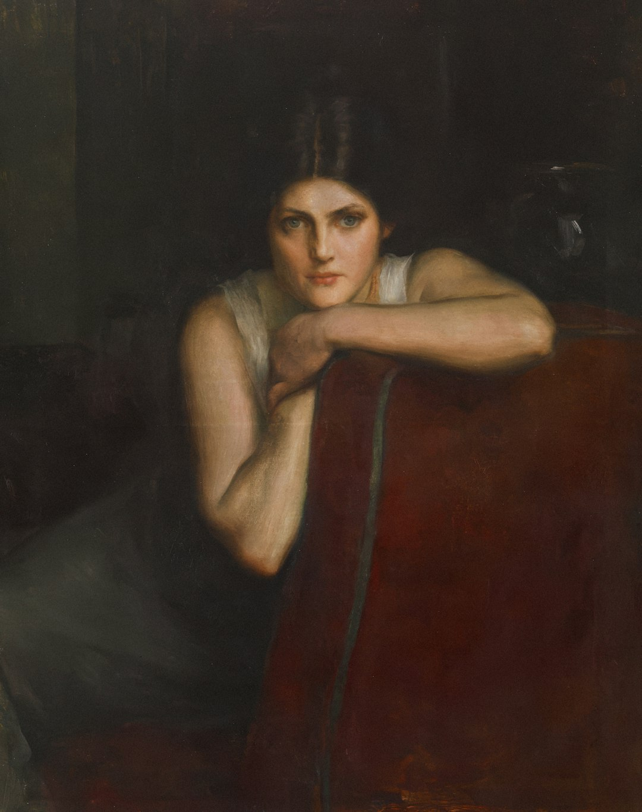
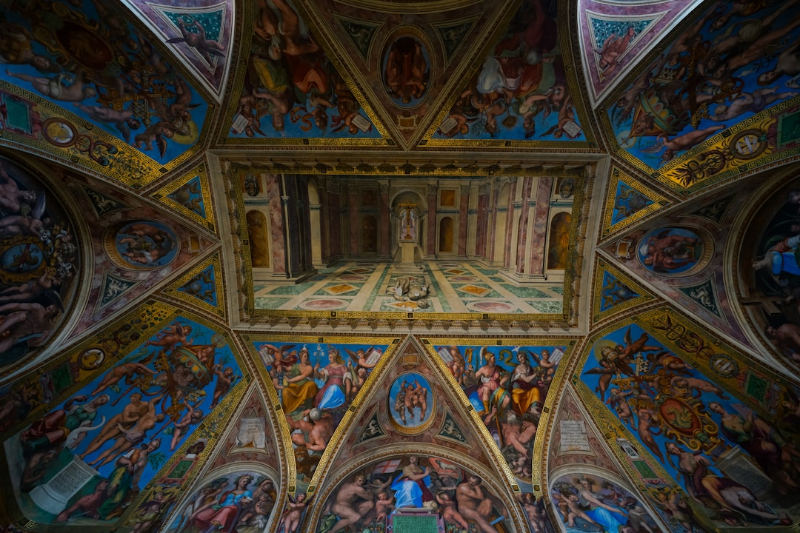
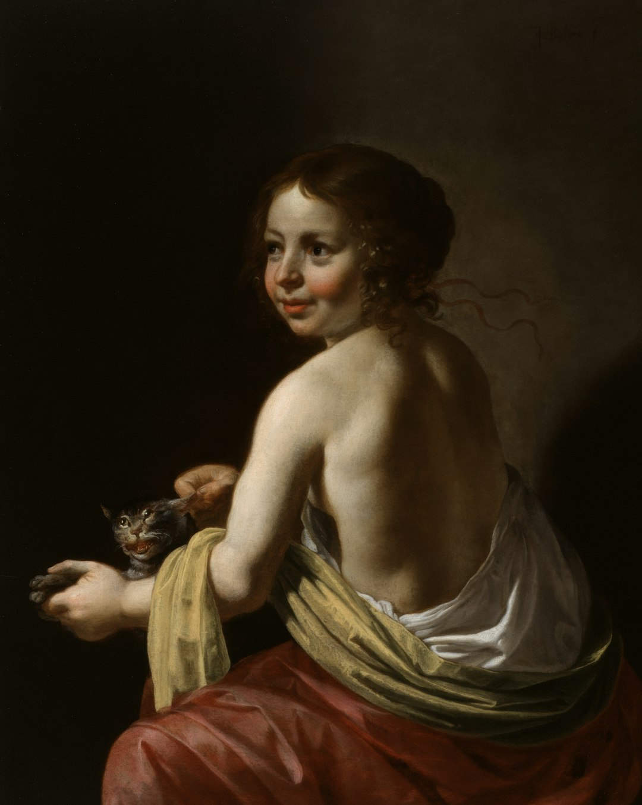
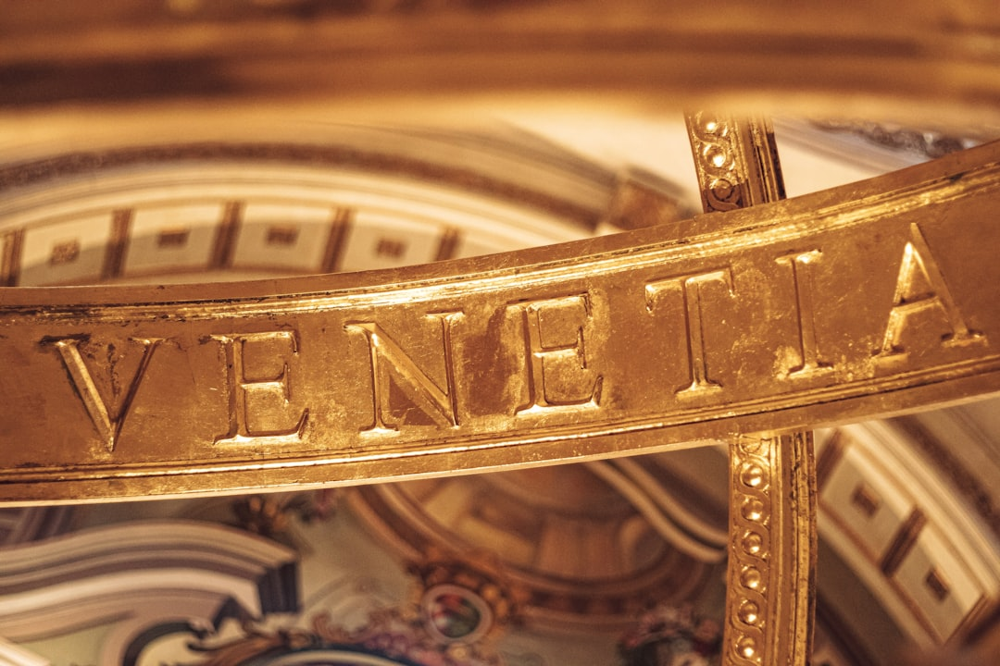
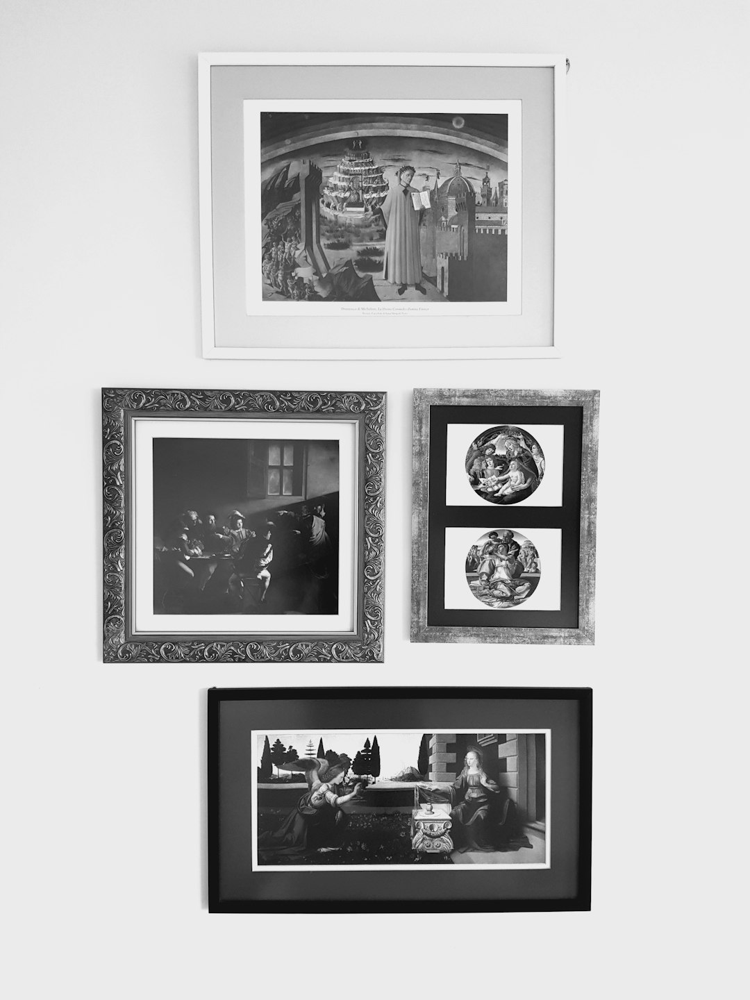
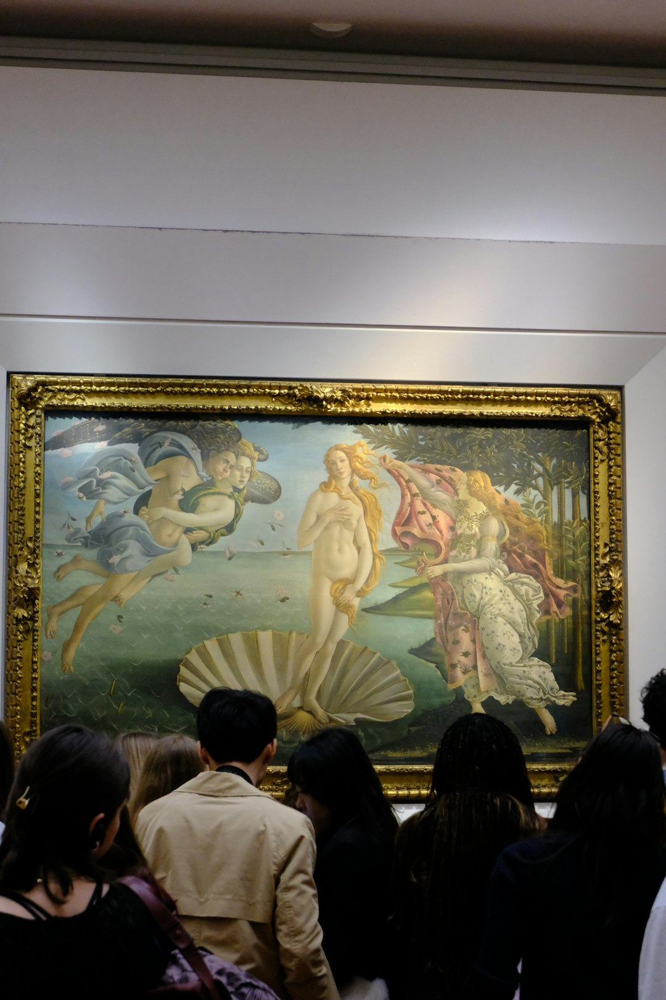
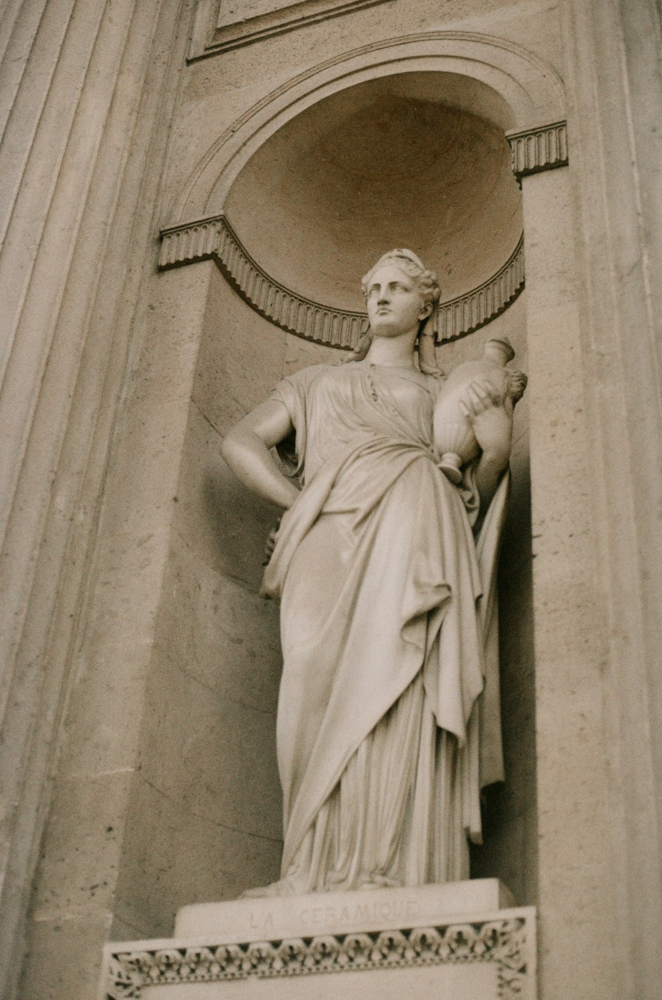
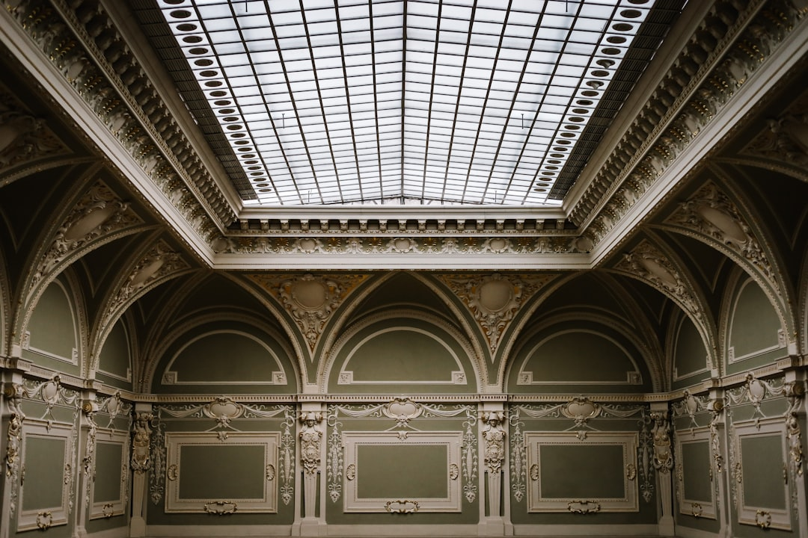

italian painter
SCROLL
The Museo showcases the latest research by experts and scholars. Each season presents extraordinary exhibitions from our permanent collection and special loans from around the world.
The Museo greatly advances the knowledge and appreciation of art and cultural heritage. Thousands of masterpieces from Italian, Flemish, and Spanish schools showcase the evolution of European art.
ARTWORKS
SCULPTURES
ESTABLISHED
1819
The Museum first opened its doors on November 19, 1819. Originally, it displayed a collection of Spanish and Flemish masters from the royal collections.
1868
Following the revolution, the museum incorporated works confiscated from religious institutions, dramatically expanding the collections. Goya, Velázquez, and El Greco became centerpieces.






Alchemy and the Renaissance — where transformation meets art. The philosophical quest illuminated manuscripts and inspired great thinkers.
In the Middle Ages, the first-mentioned alchemical works began appearing across Europe. This pursuit of transmutation influenced the greatest minds and enriched countless artistic endeavors.
1617-1682
Spain
A prominent representative of the painting school of Seville. Known for his religious works depicting scenes of everyday Spanish life.
EXPLORE
Explore the former palace of the Kings of France — now the largest museum in the world covering almost 45,000 years of history. The palace is divided into three wings: Richelieu, Sully, and Denon.